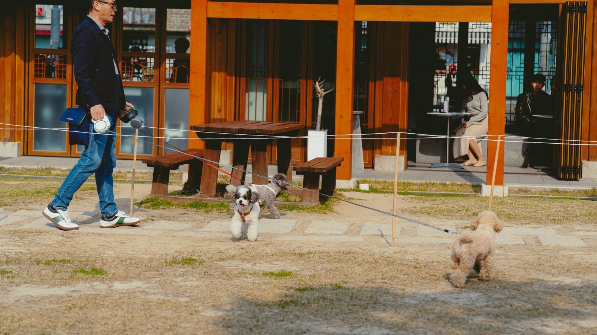

공공데이터 85,452곳 · 출입 규정 자동 판정
반려동물과
떠나는
행복한 하루
어디든 같이가개! 반려동물 입장 가능한 곳만 모아 알려드려요.
안녕! 나는 여행 도우미 가개야
어디로 갈지 물어보면 딱 맞는 곳을 찾아줄게!
REGION
지역 먼저 고르기
고른 지역이 목록 · 지도 · 아래 핫플레이스에 한 번에 적용돼요
CATEGORY
카테고리로 찾기
전국 85,452곳
QUIZ · 105문항
오늘의 반려동물 상식
HOT NOW
네이버 방문자 평점이 높은 순 · 지역과 카테고리를 바꿔 보세요
카드를 누르면 규정·체크리스트까지 볼 수 있어요
SOURCE
활용 공공데이터
9,764곳한국관광공사반려동물 동반여행 서비스
70,650곳한국문화정보원반려동물 동반 가능 시설
5,038곳행정안전부전국 동물병원 · 전수조사로 오류 406곳 삭제

QUIZ & TIPS
반려동물 상식 퀴즈
강아지 · 고양이 · 예방접종 · 위험한 음식 · 기초 상식 · 기분 신호까지
총 문항을 O/X로 확인해 보세요.
알아두면 좋은 상식
위생 · 청결 · 안전 · 잘못된 상식
건강·접종 관련 내용은 일반적인 안내이며, 우리 아이에게 맞는 판단은 수의사와 상담해 주세요.